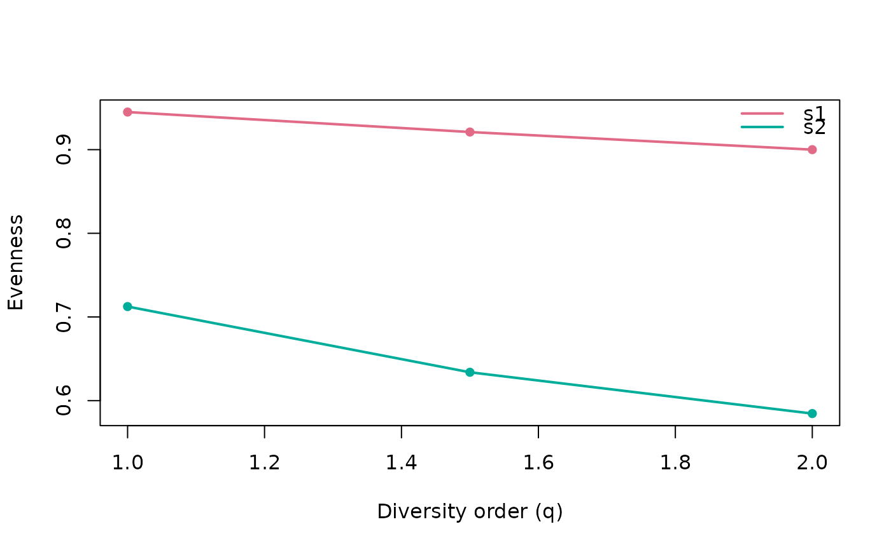

Evenness expressed through Hill numbers as the ratio of diversity of order
q to richness (qD / 0D), which ranges from 0 to 1.
Arguments
- data
Counts: a numeric vector (one sample), a matrix/data.frame (taxa x samples), a
phyloseqobject or aTreeSummarizedExperiment.- q
Numeric vector of diversity orders (> 0 are meaningful for evenness). Defaults to
c(1, 2).- tree
A phylogenetic tree of class
phylowhose tip labels match the taxa indata.- dist
A functional distance matrix (or
dist) over the taxa.- tau
Optional functional distance threshold. Defaults to
max(dist).- type
Diversity type:
"auto"(default) infers it from the inputs (counts only -> neutral,+tree-> phylogenetic,+dist-> functional); an explicit"neutral","phylogenetic"or"functional"asserts the type and is validated against the inputs (e.g."phylogenetic"requires atree;"neutral"ignores any tree/dist carried by the object).- out
Output shape:
"tibble"(default) returns a long-formatdata.framewith columnsq,sample,value;"matrix"returns the legacy matrix (orders in rows, samples in columns).
Value
A long-format data.frame of class hill_evenness (default) with a
plot() method, or a matrix of evenness values (orders in rows, samples in
columns) when out = "matrix".
Examples
counts <- matrix(c(10, 0, 5, 2, 8, 1), nrow = 3,
dimnames = list(c("t1", "t2", "t3"), c("s1", "s2")))
hilleven(counts)
#> Computing neutral evenness of "q1" and "q2".
#> <hilldiv3 result: neutral>
#> 4 rows x 3 cols
#>
#> q sample value
#> 1 1 s1 0.9449408
#> 2 2 s1 0.9000000
#> 3 1 s2 0.7124362
#> 4 2 s2 0.5845411
plot(hilleven(counts, q = c(1, 1.5, 2)))
#> Computing neutral evenness of "q1", "q1.5", and "q2".
